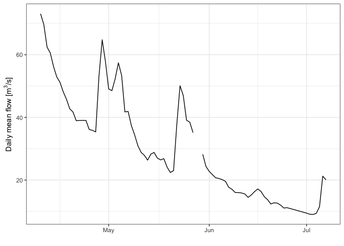

The ea package provides access to Environment Agency (EA) Hydrology API.
Installation
You can install the development version of ea from GitHub with:
devtools::install_github("simonmoulds/ea")Example
Here is a basic example that shows you how to use the package to download streamflow timeseries data from the EA Hydrology API:
First we get discharge stations on the River Thames within 5km of Abingdon:
stns <- ea_station_list(
sample_of = "River Thames", observed_property = "waterFlow",
lat = 51.6708, long = -1.2880, dist = 5
)
stns
#> # A tibble: 1 × 21
#> `@id` label notation easting northing lat long type riverName stationGuid
#> <chr> <chr> <chr> <int> <int> <dbl> <dbl> <lis> <chr> <chr>
#> 1 http:… Sutt… b0713e8… 451702 194623 51.6 -1.25 <df> River Th… b0713e87-c…
#> # ℹ 11 more variables: stationReference <chr>, wiskiID <chr>, RLOIid <chr>,
#> # rloiStationLink <df[,1]>, catchmentArea <dbl>, dateOpened <chr>,
#> # nrfaStationID <chr>, nrfaStationURL <chr>, observedProperty <list>,
#> # status <list>, measures <list>There is only one station available. We extract its global unique identifier (GUID), and use ea_timeseries_list to retrieve the available timeseries data:
guid <- stns$stationGuid
tslist <- ea_timeseries_list(guid)
tslist
#> # A tibble: 7 × 15
#> `@id` label parameter parameterName notation period periodName valueType
#> <chr> <chr> <chr> <chr> <chr> <int> <chr> <chr>
#> 1 http://env… Dail… flow Flow b0713e8… 86400 daily mean
#> 2 http://env… Dail… flow Flow b0713e8… 86400 daily min
#> 3 http://env… Dail… flow Flow b0713e8… 86400 daily max
#> 4 http://env… 15mi… flow Flow b0713e8… 900 15min instanta…
#> 5 http://env… Dail… level Level b0713e8… 86400 daily max
#> 6 http://env… 15mi… level Level b0713e8… 900 15min instanta…
#> 7 http://env… Dail… level Level b0713e8… 86400 daily min
#> # ℹ 7 more variables: valueStatistic <df[,2]>, observationType <df[,2]>,
#> # observedProperty <df[,2]>, station <df[,5]>, unit <df[,1]>, unitName <chr>,
#> # hasTelemetry <lgl>We can see that there are several timeseries available for this station, each referenced with a unique measurement ID provided in the notation column. We retrieve the ID for daily mean flow:
measure <- tslist |>
filter(period == 86400 & valueType == "mean") |>
pull(notation)
measure
#> [1] "b0713e87-cab3-46e4-bfb3-f0bbb91cedf6-flow-m-86400-m3s-qualified"We can use the measurement ID to retrieve the timeseries data:
min_date <- Sys.Date() %m-% months(3)
ts <- ea_timeseries_values(measure, min_date = min_date)
ts
#> # A tibble: 84 × 9
#> measure date dateTime value completeness quality valid
#> <chr> <date> <dttm> <dbl> <chr> <chr> <chr>
#> 1 b0713e87-cab… 2024-04-18 2024-04-18 00:00:00 45.8 Complete Good <NA>
#> 2 b0713e87-cab… 2024-04-22 2024-04-22 00:00:00 39.0 Complete Good <NA>
#> 3 b0713e87-cab… 2024-04-25 2024-04-25 00:00:00 36.1 Complete Good <NA>
#> 4 b0713e87-cab… 2024-04-27 2024-04-27 00:00:00 35.4 Complete Good <NA>
#> 5 b0713e87-cab… 2024-04-30 2024-04-30 00:00:00 57.8 Complete Good <NA>
#> 6 b0713e87-cab… 2024-04-28 2024-04-28 00:00:00 53.1 Complete Good <NA>
#> 7 b0713e87-cab… 2024-04-29 2024-04-29 00:00:00 64.8 Complete Good <NA>
#> 8 b0713e87-cab… 2024-05-26 2024-05-26 00:00:00 38.5 Complete Good <NA>
#> 9 b0713e87-cab… 2024-05-20 2024-05-20 00:00:00 22.4 Complete Good <NA>
#> 10 b0713e87-cab… 2024-05-28 2024-05-28 00:00:00 NA Incomplete Missing <NA>
#> # ℹ 74 more rows
#> # ℹ 2 more variables: invalid <chr>, missing <chr>Alternatively, we can supply the station GUID and some additional parameters to retrieve the timeseries data:
ts <- ea_timeseries_values(
station_guid = guid, observed_property = "waterFlow",
value_type = "mean", period = 86400, min_date = min_date
)
ts
#> # A tibble: 84 × 9
#> measure date dateTime value completeness quality valid
#> <chr> <date> <dttm> <dbl> <chr> <chr> <chr>
#> 1 b0713e87-cab… 2024-04-18 2024-04-18 00:00:00 45.8 Complete Good <NA>
#> 2 b0713e87-cab… 2024-04-22 2024-04-22 00:00:00 39.0 Complete Good <NA>
#> 3 b0713e87-cab… 2024-04-25 2024-04-25 00:00:00 36.1 Complete Good <NA>
#> 4 b0713e87-cab… 2024-04-27 2024-04-27 00:00:00 35.4 Complete Good <NA>
#> 5 b0713e87-cab… 2024-04-30 2024-04-30 00:00:00 57.8 Complete Good <NA>
#> 6 b0713e87-cab… 2024-04-28 2024-04-28 00:00:00 53.1 Complete Good <NA>
#> 7 b0713e87-cab… 2024-04-29 2024-04-29 00:00:00 64.8 Complete Good <NA>
#> 8 b0713e87-cab… 2024-05-26 2024-05-26 00:00:00 38.5 Complete Good <NA>
#> 9 b0713e87-cab… 2024-05-20 2024-05-20 00:00:00 22.4 Complete Good <NA>
#> 10 b0713e87-cab… 2024-05-28 2024-05-28 00:00:00 NA Incomplete Missing <NA>
#> # ℹ 74 more rows
#> # ℹ 2 more variables: invalid <chr>, missing <chr>Once we have obtained the data we can plot the timeseries:
